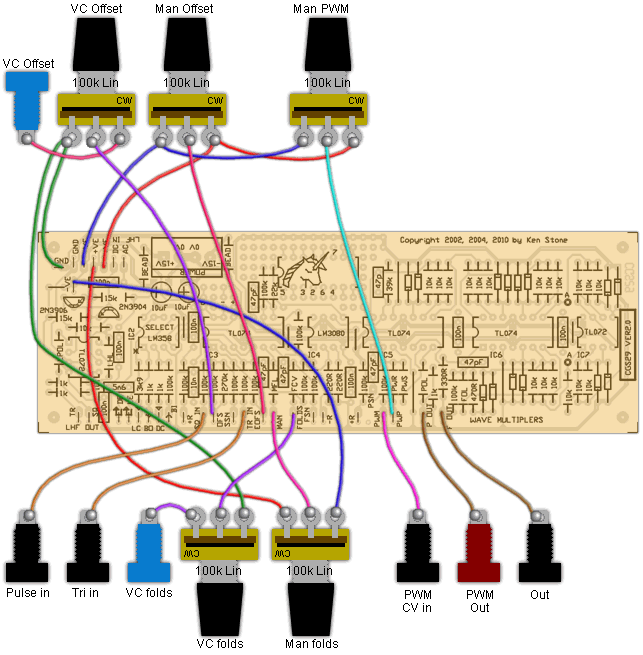
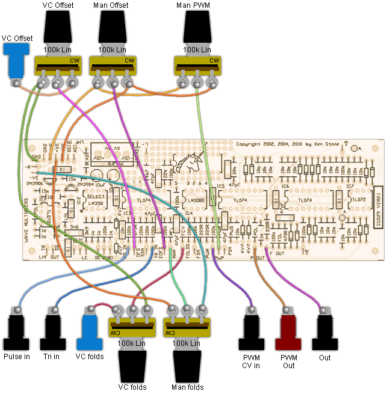

|
Wave Multiplier for music synthesizers.
Photo of the VER2.0 PCB. Ver2.0/Ver2.1 documents (Go to archive - V1 Rev 2 docs)
The idea for this project came from the fabled middle section of the Serge wave multipliers. At the time I designed this, I had never seen or heard one of these units, nor had I seen its schematic diagrams, but armed with descriptions and suppositions by various people who had seen them, and a couple of photos of CRO traces from the output of the module, I decided to design myself one. The result as displayed on the CRO is very close to those of the Serge, with the exception of the final fold, where, in my design, the wave maintains more of its original shape. It can produce the most amazing, harmonically rich, filter-like sweeps. It took me weeks of experimentation before I came up with the final design. I tried various configurations (usually mixing the outputs of successive rectifiers) as suggested on websites devoted to the original, and while I did have success, there were elements of the designs that I felt were poor. It wasn't until I approached the problem from a different angle that I was happy with the result. The circuit I came up with I would describe as a "reflector", and is ingeniously simple. The day after I released the first version of this module, I was emailed the schematic of the Serge version, and apart from the value of the resistors, the "folder" was the same "reflector" I had designed. There were some other differences, such as in how I drove the VCA, and how the final fold was dealt with. Initially I decided to release a four-stage unit, having experimented with up to 7 stages. This version re-instates two of the folding stages. In addition to this multiplier, there are two more simple multipliers, one created by adding lag to the feedback path of an op-amp, the other being the "Nonselective Frequency Tripler" by R. Lockhart. Its functionality is not unlike Moog's single transistor sawtooth to triangle wave converter. It's intended purpose is to convert a signal into another of three times the frequency. To do this it expects a +/-1.2 volt triangle or sine wave, and outputs a +/-0.4 volt complex waveform. Unfortunately, due to the uneven spacing of the frequency multiplied waveform, it does not sound like it is a fifth above the incoming signal. This of course in of no particular concern in this application, as the purpose of this module is to create a complex harmonic structure from a simple input, not to triple the frequency. See the Simple Wave Folder for further details on this circuit. Input range of signals is +/- 5V. Greater signals will not damage it, but may cause distortion. Changes in this version (VER2.0): Two extra folding stages have been added to the main multiplier. The prototyping area has been modified to allow easy substitution of an LM13600/LM13700/NE5517N for the LM3080/CA3080, which is now obsolete. TL07x series chips have been substituted for the LM324. Resistors affecting levels have been marked. In addition to this, there are some suggested modifications to improve it further, though it will work without the modifications. How to use this module: For the primary multiplier, the "folder", connect the input to the triangle wave output of a VCO. Connect a LFO, envelope generator or even a DC voltage to the folds input. The result will be a harmonically rich signal at the "F out" output. A second input based on a lag circuit allows square waves and other hard-edged waveforms to be used as the signal source. There is also a "squared" output available, with "pwm" inputs to further vary the possibilities. To use the second multiplier, the "grinder", feed the input from the output of a VCO. Adjusting the "drive" and "lag" pots will give variation to the output signal. Obviously both multipliers can also be used to mangle control voltages, the outputs from LFOs etc. A little on how it works:
The "grinder" is simply an inverting amplifier with a lag circuit in its feedback path. Depending on the time constant of the lag pot and its associated capacitor, the op-amp will take longer to settle. In trying to maintain the virtual ground at pin 2 of the first op-amp the output will overshoot, then as the virtual ground settles, then passes the optimal point, the output will again try to compensate, with the same results. The result is a "ringing" that is imposed on the input waveform around the points it changes direction. This introduces a lot of high frequency hash. The op-amp best suited to this circuit is the LM358. The characteristics of the grinder will differ significantly if another chip type is substituted. You may even find you need to try several LM358 variants and select the best.
Construction
Before you start assembly, check the board for etching faults. Look for any shorts between tracks, or open circuits due to over etching. Take this opportunity to sand the edges of the board if needed, removing any splinters or rough edges. (With the boards supplied by me, the edges are already milled, and etching faults are very rare.) When you are happy with the printed circuit board, construction can proceed as normal, starting with the resistors first, followed by the IC sockets if used, then moving onto the taller components. Take particular care with the orientation of the polarized components, the electrolytics, diodes and ICs. I would recommend the use of a socket for at least the LM358. This will allow a number of ICs to be tried and the best selected When inserting the ICs in their sockets, take care not to accidentally bend any of the pins under the chip. Also, make sure the notch on the chip is aligned with the notch marked on the PCB overlay. Where there was space on the PCB, I have allowed extra pads so that various size capacitors can be fitted. There are several decoupling capacitors, none of which are shown on the schematic. There is provision on the rear of the PCB for an additional 7 100n 1206 SMT decoupling capacitors. It is a good idea to insert a 100k resistor between the +15V supply and the normalized connection on any CV jack you may chose to wire that way. This is because +15 will momentarily be fed out of this jack when you plug something into it, due to the mechanical nature of the contacts. The pads marked R+ are there for this purpose. There is also an R- pad as well connected directly to the -15V supply. The unused op-amp has been brought out to pads, though will require a couple of tracks to be cut if it is to be used. There is also a small prototyping area provided. If substituting a LM13600/LM13700/NE5517N for the LM3080/CA3080, you need to run wires from the 3080 pin locations to the corresponding numbered pad in the prototyping area. Two additional 220 ohm resistors are then soldered between Pins 14 and GND, and 13 and GND. The GND trace is immediately next to the provided pads. See the photo at the top of the page. As originally presented, the input level pot on the Lockhart wave folder allows the input to be taken right down to zero. If a 4k7 resistor is soldered between the CCW end of the pot and GND, the Lockhart will pass an essentially unmodified signal with the pot rotated to its CCW end, assuming a +/-5 volts or lower strength signal. Placing a 22k resistor between the CW end of the pot and the input jack limits the maximum amount of folding to +/- 5 volts. If a greater signal is fed to it, or if this upper resistor is omitted, the folded signal will continue to grow until it forces the op-amp into clipping, giving a signal strength near that of the power rails. The above resistor values were selected using a 100k pot that actually measured 110k, which is within tolerance. The resistor values may need tweaking depending on the pot chosen, and the signal strengths used in your synthesizer. (These resistors are marked with #1 on the schematic.) Modifications to the VER2.0 board These are shown on the circuit diagram in dark red. The addition of a 10k resistor and two 4.7 volt 400mw zener diodes wired back-to-back limits the total voltage going into the PWM comparator to a level that is less than the signal level of the multiplied waveform. This helps prevent signal drop out at the extremes of the PWM control range. It will not prevent drop-outs when the 'Folds' setting is at its lowest, or when the input signal is too weak to cause any wave folding to occur. This requires a track to be cut on the rear of the PCB. The addition of a 1k resistor and two 4.7 volt 400mw zener diodes wired back-to-back at the output of the Grinder limits the output waveform to roughly +/- 5 volts. Without these diodes, the output can easily reach the near-power rail voltages. These parts can be tacked on the PCB as shown in the photo, or they can be added between the PCB and the output jack. The 5n6 specified affects the frequency of the instability in the Grinder. Other values may prove more satisfying to your ear. On this occasion I substituted a 15n and used a 100k pot instead of the original 1M. Additional construction notes for the VER2.0 PCB: There are two pads marked DC. do not confuse them. One is the DC input for the Lockhart and is located near the text "LHF IN". The other is the wiper connection for the Grinder Drive pot and is also marked with a small triangle. Additional construction notes for the VER2.1 PCB: An error has been found on the VER2.1 PCB. In the Lockhard multiplier the end of the 15k resistor that is meant to connect to the -VE rail has somehow become isolated. A short link to the nearby -VE pad will correct the problem. At assembly time, this can be done by folding the resistor lead across to the adjoining pad and soldering it before trimming it. See the PCB image above for the location. It is marked in red. Additional construction notes for the VER2.2 PCB: This board can be built as is. The 4k7 used at the CCW end of the Lockhart Folds pot is now onboard. It is accesible via the pad marked LO. Resistor Designations:
The 100n AC input capacitor on the Lockhart should be at a polyester type such as greencap or MKT. The remaining six 100n can be ceramic monoblock decoupling capacitors.
Wiring the VER 2.0 PCB version of the Grinder and Lockhart folder.

Wiring the VER 2.1 PCB version of the Grinder and Lockhart folder.

Notes:
Parts list This is a guide only. Parts needed will vary with individual constructor's needs. If anyone is interested in buying these boards, please check the PCBs for Sale page to see if I have any in stock. Can't find the parts? See the parts FAQ to see if I've already answered the question. Also see the CGS Synth discussion group.
Article, art & design copyright 2002 by Ken Stone
| |||||||||||||||||||||||||||||||||||||||||||||||||||||||||||||||||||||||||||||||||||||||||||||||||||||||||||||||
{kind=link}